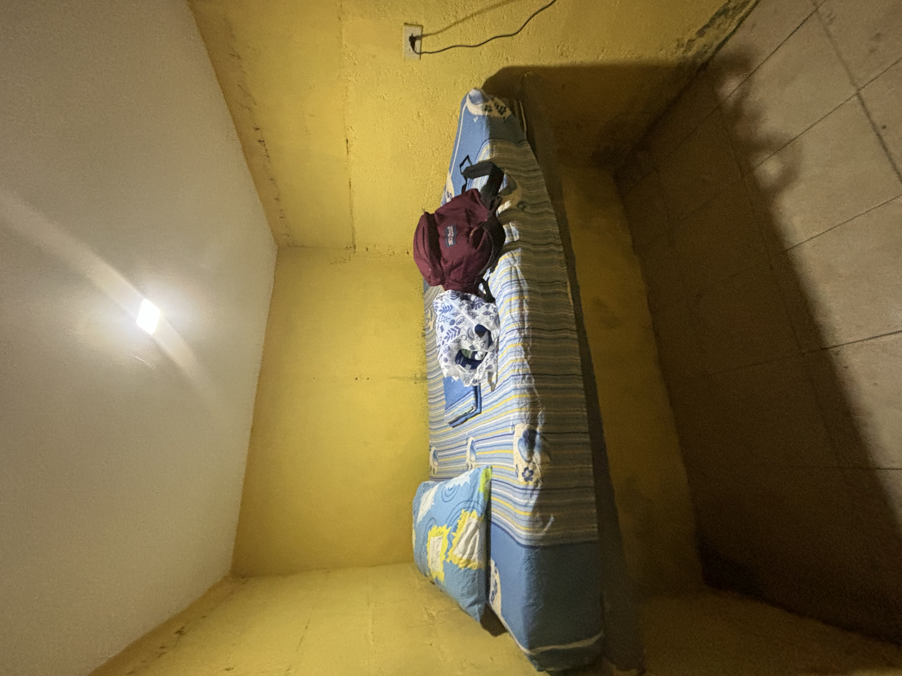

My Experiences in Latin America
An essay on my experiences in Latin America, and what it was like to grow up in two different parts of the world.
By Jonathan Renoj
August 19th, 2024

Lago de Coatepeque, El Salvador
Growing up, I had the privilege of living in two drastically different countries. I was born and raised in Los Angeles, CA, but I spent a good portion of my youth living in Guatemala. During those times, I had the opportunity to travel the entire country while meeting people from all walks of life.
My home in Guatemala consisted of a large house with a farm for a backyard. In the mornings, I climbed hills and walked through endless fields of corn with my dog. In the afternoons, I could count on my grandma cooking a traditional Guatemalan dish, such as pepián or hilachas. As the sun would set, I would slowly be greeted with something that our ancestors could once see so clearly: A starry night.
The night time would always be the highlight of my day. I would go on the roof of my home and stare at the stars for countless hours - all while temperatures were near 0°C. Coming from a place like Los Angeles - a city with terrible light pollution (Bortle 9) - being able to see such a clear starry night was a gift to me. Throughout the years, – and with a purchase of a telescope – I have been able to observe meteors, comets, planets, moons, stars, the Andromeda galaxy.
I love Guatemala, but I know it is far from perfect. My experiences in the country are one of privilege and wealth. According to the World Bank, an estimated 55.1% of Guatemalans in 2023 lived in poverty. Unlike in the first world, this poverty is not hidden. Go anywhere in the country and you will see homes that are on the brink of collapse, children begging on the streets, and families attempting to survive on a daily minimum wage of Q110 Quetzales – roughly $14.50 USD. Despite all of this, most items are priced as they would be in U.S. dollars, especially essential products like medicine, vehicles, technology, gasoline, etc. Unfortunately, there are few alternatives to these imported products, forcing even local producers to raise prices due to their dependence on expensive imported machinery and resources.
I want to acknowledge these truths, as I know my experiences in Guatemala do not speak for the countless Guatemalans who must deal with inflation, government corruption, and wealth inequality.
Until this year, Guatemala and the United States were the only countries that I had ever visited. I’ve gone to Mexico before, but I’ve never spent more than two days there. For that reason, I want to focus on El Salvador. I had the opportunity to drive through the entire country of El Salvador, all while visiting remote areas and staying with people who were born and raised in El Salvador. It made me appreciate this small country that until recently was the murder capital of the world.
El Salvador
It took me 6 hours just to even reach the border. The drive was filled with deep potholes, extreme rain, and exhaustion. When I reached the Guatemala/El Salvador border, I had to pay $12 to legally enter with my car – not too bad. I ended up staying in a simple hotel in Santa Ana for $12.50 USD. For dinner, I spent $2.40 on 3 pupusas revueltas and a drink they call “Ensalada” which I very much enjoyed.
The next morning, I drove to “El Congo” looking for an old family friend. I somehow ended up in a village by following a dirt road, but it turned out to be the correct spot. The small village was adjacent to the Panamerican highway CA-1, yet this area seemed to be ignored. All roads were dirt roads, the homes were like the ones in Guatemala: old, broken, and hardly protecting people from the elements. It was sad to see, but I found comfort knowing that they were happy to have a home and a family. After getting to know each other, the family friend suggested we drive to the nearby lake to go sightseeing and eat breakfast.
After about a 20 minute drive, I arrived in Lago de Coatepeque. It reminded me of Lago de Atitlan, but on a smaller scale. I walked around with his family, and it felt like one of those rare moments where everything feels perfect. I wasn’t worrying about work, my life back in the USA, or school. I was truly alive in the moment, but I quickly noticed something strange. Everywhere I went, I could see at least 3 armed soldiers patrolling. I was told that they were here to protect tourists, as this place was becoming really popular with foreigners, and President Bukele knows the value that they can bring to the economy. I tried to ignore it, but it served as a reminder that not too long ago El Salvador was one of the most dangerous and violent countries one could find themselves in. I asked them how they felt about it, and they explained how extreme the violence got and how these extreme measures had allowed for them to peacefully enjoy the many things El Salvador has to offer.
I decided to call it a day, and so I drove them back to their home and said goodbye. It was time for my next drive to San Salvador. I didn’t do much here besides eat lunch. Perhaps it was the fact that I was in the capital, but my lunch ended up being around $12; I hate cities, so I just ate and continued my journey south to San Miguel
After about 3 hours, I ended up near the city of San Miguel, but still far enough to enjoy the natural landscapes of El Salvador. By this point, I was exhausted, so I decided to stop for a quick rest. I told myself I was insane for even being here. Last week I was in Guatemala, traveled to the United States for two days, came back to Guatemala for a day, and somehow in El Salvador the next day. I told myself I was getting too old for this shit, but I was grateful to even have the opportunity to travel so much.
I drove up to a remote village that had some amazing geothermal features. I had family here, and stayed in a remote cabin in the jungle for that day. Together, we drove to San Miguel for more pupusas and horchata, and then headed back home.
The whole point of this trip was to give my family members a ride back to Guatemala. They had been living in El Salvador for a year and had way too many belongings to bring on a plane. I honestly thought they would at least let me rest for a night, but I was reminded that if they did not cross the border by tomorrow night, they would be fined a hefty amount. I asked for 3 hours of sleep while they finished packing, and so I mentally prepared myself to drive back again.
We left San Miguel around 10PM and I drove to Acajutla, a seaport city close to the Guatemalan border. I didn’t know we would be leaving the same day I arrived, so I didn’t make any reservations at any hotels, so I went to the only one I could find that was cheap and available. Unfortunately, the hotel I chose was straight out of a nightmare. Thankfully, I was basically a human corpse by that point, so I slept like a baby.
It was $5 dollars, but I honestly think sleeping in my car would have been better. Anyways, the next morning, I woke up to the view of the beach. It felt calming; It had been so long since I’ve seen the ocean, especially in central america.
I honestly could write about so much more, but I doubt many of my readers have the time or energy to read all of that…I guess I wanted to share what I saw and felt in my adventures. I feel so grateful to be able to travel the way I do, and I hope more people are given the opportunity to experience and see more of the world. It truly has changed my life in more ways than I could ever express in words.
Thanks for reading! - Jonathan